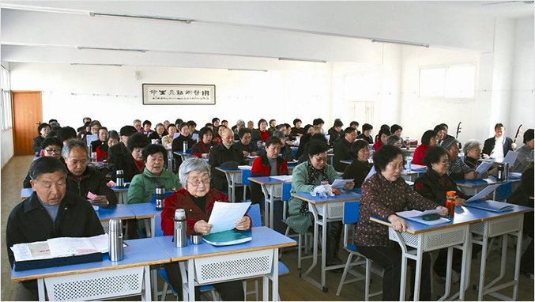

老年大学简介
太原市老年大学

太原市老年大学创办于1987年9月，原校址在太原市桃园三巷119号，校舍面积只有500余平方米，2007年8月正式搬迁到由太原市政府投 资建造的拥有6000余平米的新教学大楼内，现址位于太原市金刚里西巷11号。本部现有学员1580人，共有书法、绘画、摄影、音乐、舞蹈、保 健、烹调、电脑、服饰表演、英语、文学、乐器、钢琴、瑜珈等专业14个，开设课程27门。艺术总团下设合唱团、舞蹈团、服饰艺术团、晋剧 团、京剧团、国标舞团、健身舞团、拉丁舞团、乐团等分团共有14个。
多年来，市老年大学在太原市委、市政府的正确领导下，在市委老干局的直接管理下，在社会各界的高度重视和广泛参与下，办学规模、办学水 平、办学影响等方面，均有了大的发展和突破，跨入全国先进行列，受到中央有关部门领导的充分肯定和高度评价。培养出一大批老年书画爱好 者、摄影爱好者、文学爱好者，特别是老年舞蹈、模特、合唱、戏曲、器乐、各类健身、老年养生学、烹饪、计算机等教学门类更是深受老年朋 友的欢迎。许多老年朋友在参加全国、省、市各种比赛中均获得了较高的荣誉。市老年大学老年艺术总团多次参加了全国、省、市文艺演出活动， 尤其是在国家的重大纪念活动以及每年度的各项重大文艺比赛中，到处都活跃着艺术团学员们的身影。他们已成为我市群众文化演出活动的主力 军，进一步促进和繁荣了老年文化事业。